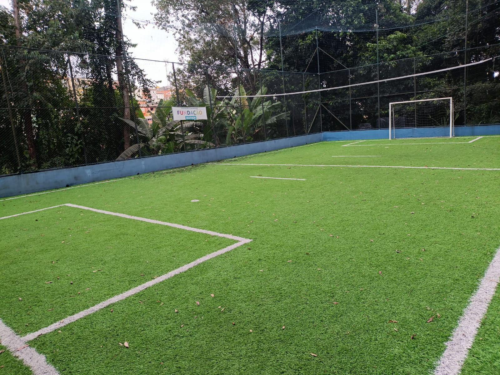

PROJETO UIRAPURU
| Serviço: | Capacitação Profissional para jovens e Inserção no mercado de trabalho |
| Endereço: | Rua João Pires de Camargo, 207 - Jardim Mirna |
| Telefone: | (11) 4701-5641 |
| E-mail: | uirapuru@projetouirapuru.org.br |
| Coordenador: | Daniella Michel |
| Inscrições: | Pelo whatsapp (11)99426-2805 |
Sobre:
Imagine um ninho. Um lugar de acolhimento, cuidado e apoio. É isso que somos no Projeto Uirapuru. Preparamos jovens da rede pública para alcançar novos voos, sabendo que voar é um desafio que exige resiliência, comprometimento e a melhor versão de cada um. Como uma mãe que quer o melhor para seus filhos, somos exigentes e amorosos, uma vez que aqui cada jovem encontra espaço para desenvolver seu pleno potencial e se preparar para os desafios da vida e do mercado de trabalho.
Galeria de Fotos

Atividade
Jovens em atividades

Sala de aula
Sala de aula dos aprendizes

Sala de aula
Sala de aula de informática

Quadra
Quadra de futebol para uso dos alunos
×